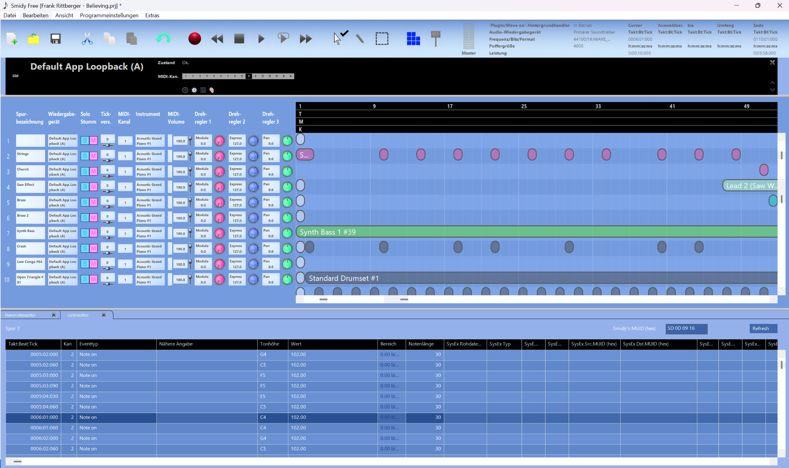
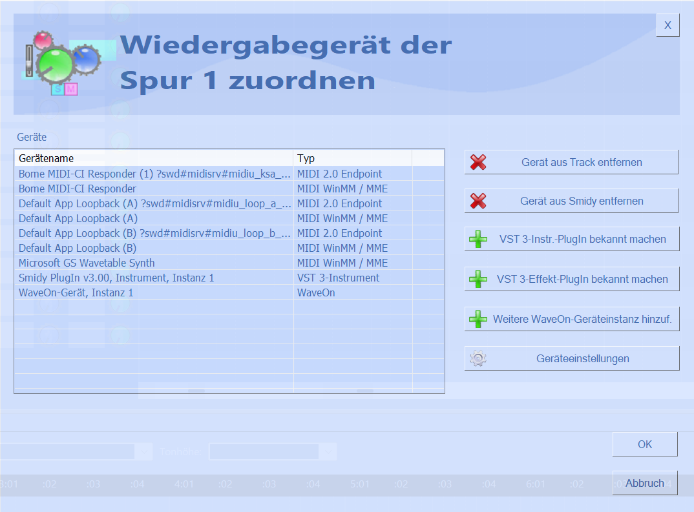
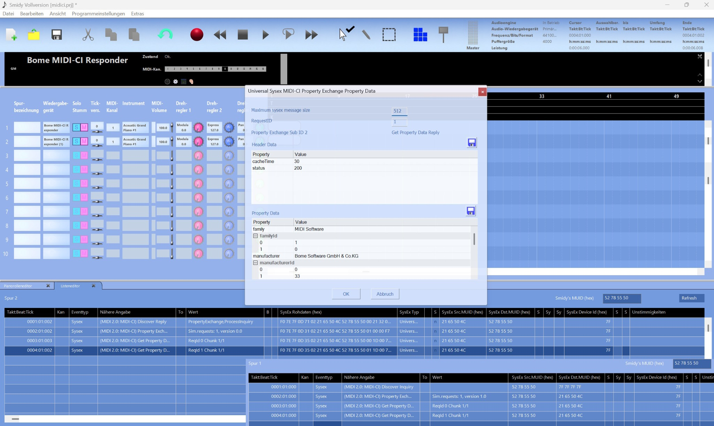
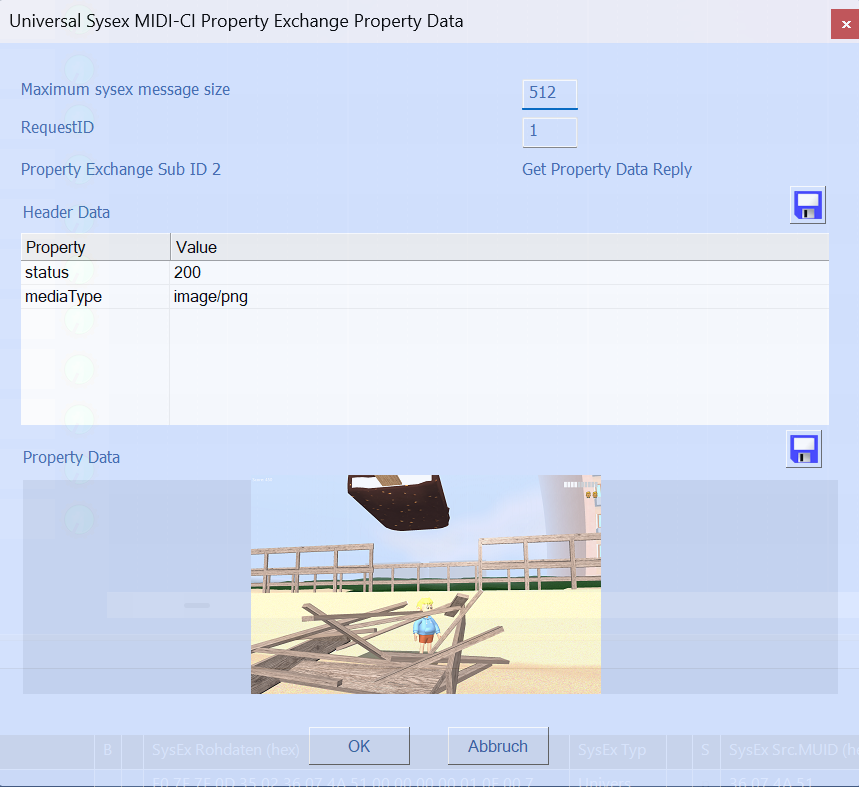

01
MIDI 2.0
Work with Universal MIDI Packets and explore the new world beyond MIDI 1.0.
Smidy is a powerful MIDI analysis and editing toolbox for musicians, developers and everyone who wants to look beyond the surface of MIDI.
Smidy combines MIDI playback, editing and detailed event inspection in a single workspace. From traditional MIDI events to modern MIDI 2.0 data, everything stays visible and accessible.

A complete MIDI workspace with playback, track controls, editing and detailed event inspection — all in one place.
Work with Universal MIDI Packets and explore the new world beyond MIDI 1.0.
Discover devices, profiles and capabilities — and see what MIDI devices tell each other.
Inspect and edit manufacturer-specific data with a semantic approach to SysEx.
Explore the structured data that modern MIDI devices can exchange through MIDI-CI.
Smidy doesn't treat MIDI 2.0 as a separate world. MIDI 2.0 endpoints appear alongside traditional MIDI devices and can be assigned directly to tracks.

Smidy can decode and present MIDI-CI communication semantically — from Discovery and Profiles to Property Exchange — while keeping the original SysEx data available in the event stream.

This demonstration uses the Bome MIDI-CI Responder through its MIDI WinMM / MME interface. Smidy also works with the modern MIDI 2.0 endpoint infrastructure provided by Windows MIDI Services.
Property Exchange is more than text. Smidy lets you work comfortably with media data defined by the MIDI Association — including images — directly inside the Property Exchange data.

MIDI 2.0 introduces a much richer language for communication between applications and instruments. Smidy is built to make that communication understandable.
From UMP messages to MIDI-CI and Property Exchange — Smidy lets you inspect what is really happening.
MIDI 2.0 data is maintained internally at its native high resolution and sent at the appropriate resolution when using MIDI 2.0 output.
UMP
Message Type 0x4
Group 0
Status Note On
Channel 1
Note 60
Velocity 0x7FFF
MIDI-CI
Discovery Inquiry
Version 1.2
Property Exchange ReadySmidy Free is a fully usable MIDI tool rather than a crippled trial version. It is nevertheless a time-limited Microsoft MIDI 2.0 preview build. Import MIDI files, record MIDI, edit your data and export your work — and explore Smidy's semantic SysEx and MIDI-CI features along the way.
Some advanced functions are reserved for Smidy Full. The core workflow isn't.
Smidy's MIDI editing functions are designed to make precise operations feel immediate and understandable. Sometimes a little animation says it better.
Select the range you want to remove and let Smidy take care of the MIDI events.
Shift the pitch or key of the selected MIDI material with a single focused operation.
Separate MIDI material by channel and keep the result clear and easy to work with.
Download the free preview and explore MIDI 2.0, MIDI-CI and Smidy's powerful MIDI tools.
This preview uses pre-release Microsoft Windows MIDI Services components. It is not for production use. After November 30, 2026, Smidy will no longer start.
Windows · Free to use · Full version coming later
Anbieter:
Frank Dirk Rittberger
Carl-Behrens-Str. 13
01728 Bannewitz
Deutschland
Kontakt:
E-Mail: frittelberger@gmail.com
Telefon: 0351/27802285
Die Software Smidy nimmt den Schutz Ihrer persönlichen Daten ernst.
Die Anwendung wird vollständig lokal auf Ihrem Endgerät ausgeführt.
Es werden zu keinem Zeitpunkt personenbezogene Daten erhoben,
gespeichert oder an externe Server übermittelt.
Die Software verfügt über keine Analyse-Tools, Crash-Reporter oder automatische Update-Funktionen.
Verantwortlicher im Sinne der DSGVO ist der im Impressum genannte Entwickler.
Für den auf dieser Website eingebundenen Besucherzähler wird ein externer Dienst verwendet. Dabei kann eine technische Verbindung zu diesem Dienst hergestellt werden.